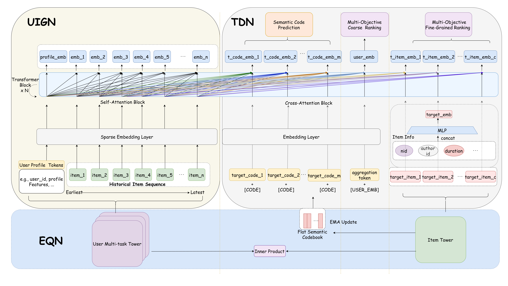
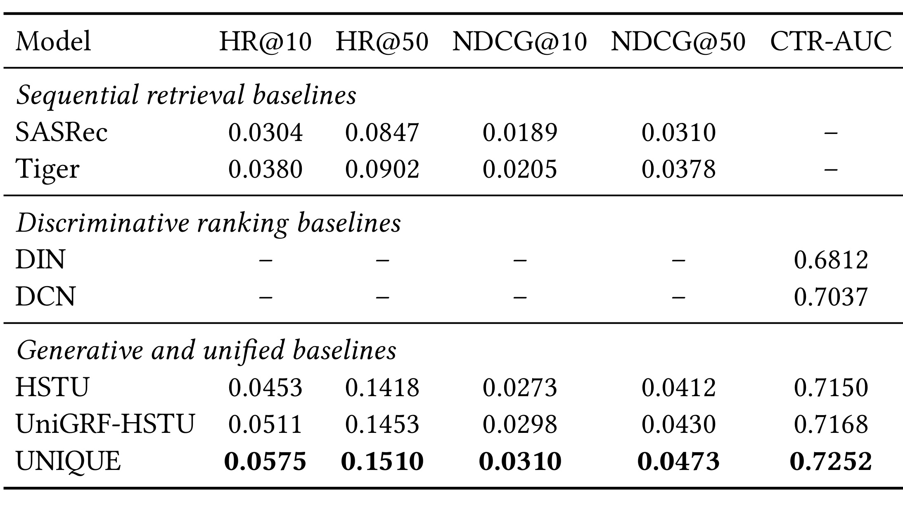
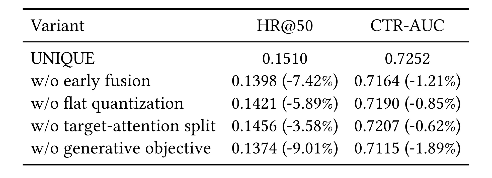
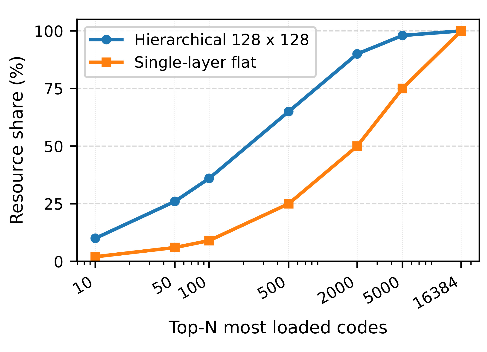
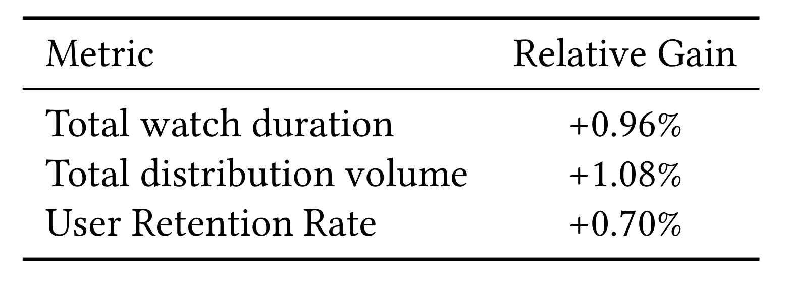
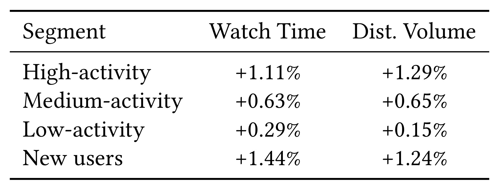
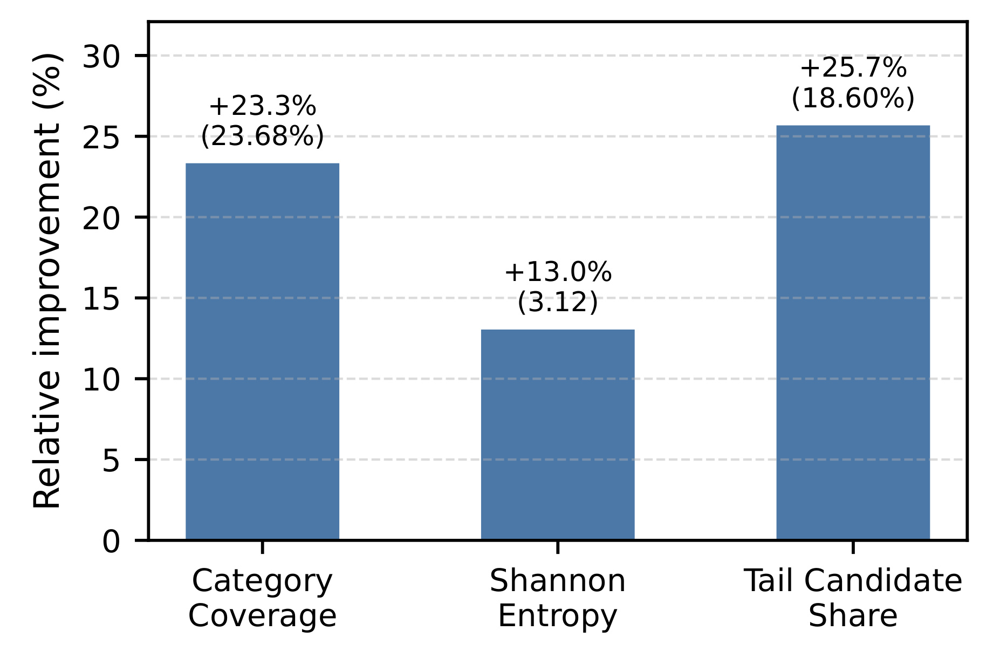
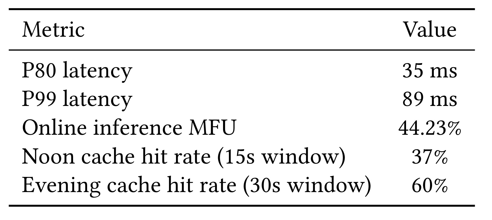

UNIQUE：反馈驱动扁平量化与统一召回排序精读
论文：UNIQUE: A Unified Retrieval and Ranking System for Large-Scale Feed Recommendation
作者：Zhuang Liu、Yongkang Fu、Zuodong Yang、Guangxing Chen、Zonggang Wu、Yuqi Lu、Shouke Qin、Shantao Li、Maolin Wang。前两位为共同第一作者。
机构：北京航空航天大学、百度、香港城市大学相关人工智能研究机构；第一作者工作在百度实习期间完成。
论文入口：arXiv:2609.23718，v1 公开于 2026-09-20；论文标注 RecSys 2026。
阅读日期：2026-09-23，依据九页原始 PDF 和当日已核验事实包。代码状态：未核验到独立代码或项目链接。
阅读结论：这是已有工业召回体系中的共享表征与联合优化方案；线上仍有多阶段候选处理。引言写二月部署，实验节写一月部署，原文时间存在冲突，不能择一作为已确认上线日期。
1. 背景和问题
工业信息流推荐最难的部分之一，是把表达能力和计算预算放在同一条链路中协调。内容库持续更新，用户既有长期稳定兴趣，也会在一段会话中突然转向新的话题；一条内容又可能同时具有标题、类别、作者、时长和不同类型的消费反馈。全库逐条精细交互通常不现实，因此系统先用召回压缩物品空间，再让排序模型对较少候选做复杂判断。百度首页信息流、发现页和短视频正对应三类不同的消费场景：混合图文视频流重视长期兴趣，双列发现页允许更多探索，沉浸式短视频有高频观看反馈。论文希望三个场景共用一种模型架构，同时允许场景特征和训练数据不同。
传统级联有一个容易被忽视的限制：排序能够准确判断的内容，必须先被召回看到。若召回模型主要使用双塔内积，其打分函数便受到用户与物品独立编码的约束；若排序使用目标注意力，候选物品能够参与选择用户历史中的相关行为，两阶段的表达能力和训练目标就会出现差异。排序在少量候选上学到的“某种历史与某种内容组合值得推荐”，未必能够改变召回对全库的筛选。仅把两个阶段连接起来，并不会自动让监督信号传回同一种表示。相反，候选分布、曝光选择和任务权重还可能使模型逐步偏向不同局部最优。
生成式召回提供了另一种组织物品空间的方式。将每个物品映射为离散语义码，模型只需预测用户下一次交互对应的码，再通过倒排关系找回物品。这样不必直接对庞大物品标识词表做生成，同时同一码下的物品能够共享部分统计信息。但是，码并不是天然正确的抽象。如果一个码容纳大量热门内容，而很多其他码几乎空置，有限预测预算会被头部区域占据；即使用户有尾部兴趣，相应候选也可能在粗粒度筛选中缺席。对于新内容，只有标题语义接近并不保证消费方式接近；文章和视频即使讨论同一个事件，点击与观看时长的反馈结构也不同。
论文针对的第一项问题就是层级量化的不稳定。残差量化通常先做粗分配，再用后续层修正剩余误差。这样的层次结构很节省码表达，但早期分配会影响后面能够修正的空间。在偏斜的工业分布下，头部内容可能反复吸引表示与更新，尾部内容获得的有效容量不足。作者用单层扁平码本替代层级码，并根据码的近期使用频率调整分配距离，试图削弱这种集中现象。需要注意，移除层级依赖并不等于证明所有单层方案都更好；它只是把优化问题从“逐层编码残差”改为“一次选择大量码中的一个”，后者仍有容量、均衡和更新稳定性的权衡。
第二项问题是码本的学习目标。若量化输入只来自物品静态元信息，聚类主要保留内容语义，而推荐需要的是内容与用户反馈之间的关系。UNIQUE 在量化前用多任务双塔学习物品向量，使向量既含类别、标题、作者等先验，也受到点击、相关性、观看时长和完播等后验反馈影响。这里的“后验”应理解为训练期已发生行为的监督信息，并不表示在线预测能够读取未来反馈。实际部署还需要严格控制特征时间，避免把目标交互结果直接作为同一条样本的输入。论文说明了反馈驱动的原则，但没有公开一套可逐字段核对的工业特征时间字典。
第三项问题是“生成”与“判别”究竟在哪里统一。作者把用户前缀、候选物品目标和候选码目标放进共享 Transformer 计算框架，通过限制注意力连接，让不同目标读取同一个用户历史。这样码预测不再只是单独用户向量与码向量做相似度，而能形成用户与目标码交互后的表示；细粒度排序也使用同一主干，再由多任务头输出不同反馈分数。这个选择让排序监督有机会改善召回所依赖的用户表示，但仍要维护不同输出头和损失权重。统一并非抹平各阶段任务，而是在保留不同任务的同时增加可共享的表示学习部分。
读这篇论文时，最需要澄清的是模型图与生产系统边界。原文提出同一前向计算图可以产生码预测和物品评分，但实际服务流程先选语义码，映射出大量物品，再粗排、按码分组、细排，最后进入后续推荐步骤。新模型部署在生产召回阶段，贡献候选池的百分之二十二点五；这不是宣称百度所有最终排序与重排都已被一个模型替换。因此，“统一召回排序”更准确的解释是这一召回通路内部联合承担候选生成和目标感知评分，并共用训练表示。把它描述成完全取消级联、一次前向直接返回最终信息流，会夸大论文已经展示的系统变化。
证据也有不同尺度。公开实验只有 KuaiRand-Pure，主要验证模型同时改善检索和点击排序的合理性；工业码本分析验证大规模容量分配；一周线上实验验证业务收益；延迟、缓存和 GPU 指标描述可部署性。四类证据能够互相补充，却不能彼此替代。公开数据中的码本规模只有一千零二十四，工业码本则是一万六千三百八十四；公开效果提升不能直接证明生产码本最优，线上指标也不能独立证明所有增益都来自扁平量化。将这些层次分开，是后续理解公式和结果的前提。
作者也明确区分检索分布与反馈预测：前者选择下一次交互更可能属于哪个码，后者评估某个具体候选的相关性、点击与消费质量。两类输出所需粒度不同，同一码中的物品仍可能有很大差异，因此索引命中以后还需要判别模型。这个任务分工解释了为什么本文没有仅靠语义码就结束推荐，也解释了多目标反馈为何不能全部压缩成一个点击标签。
2. 方法
2.1 EQN、UIGN 与 TDN 的共同计算图
原文方法依次介绍量化网络 EQN、用户兴趣生成网络 UIGN、目标码感知判别网络 TDN，再说明联合损失和在线推理。下面先用总图建立对应关系，再沿着物品成码、用户和目标交互、训练及候选流转三个过程解释。

图的左侧是用户静态画像和行为序列，它们经过稀疏特征嵌入后进入用户前缀自注意力。不同历史 token 可以交换信息，从而形成既有局部行为又有序列上下文的表示。右侧的目标码、聚合 token 和目标物品共同读取这个用户前缀，但其语义并不相同：码目标用于判断哪个语义区域值得召回，聚合表示用于粗排，物品目标则承担更细致的多目标判别。理解这种布局后，就能看到作者并没有把所有候选都当成可任意互相注意的文本序列，而是专门设计了适合推荐候选并行评分的连接方式。
底部 EQN 的双塔训练为语义码提供反馈依据。用户多任务塔和物品塔先形成内积分数，物品向量再参与码本的指数滑动更新；因此码本不只是离线文本聚类的固定产物。图中从物品塔指向码本的更新箭头与上方码目标输入关联起来，说明“码标签从哪里来”和“码标签怎样被预测”属于同一个学习体系。需要区分的是，图上相邻不代表所有梯度都按普通可微运算穿过离散选择：最近邻量化需要直通估计，码本本身又通过滑动平均更新，这些机制共同构成近似的端到端训练过程。
图的价值还在于展示共享计算的具体位置。候选物品原始字段先拼接并经过多层感知机，不是直接把物品编号当作自然语言；码也有对应嵌入和专用目标标识。不同目标进入共享主干后，由各自输出位置和任务头分工。用户前缀可以在多个候选间复用，候选之间的注意力被限制，从而避免评分无意依赖同批放入了哪些其他物品。这个结构对于吞吐的意义主要是组织并行和复用，而不是保证任何规模的候选交互都免费。实际系统仍必须压缩候选数量，后面的服务参数正是这种限制的体现。
2.2 反馈驱动的扁平码本
EQN 用物品字段产生稠密向量，并先归一化再分配码。原文双塔监督在用户侧设任务相关表示，物品侧共享编码器；相关性、点击和完播使用二元反馈，观看时长使用回归信号。正交互与批内随机重新匹配的物品组成监督样本。其作用是让“哪些内容值得放在相近位置”同时受业务反馈影响，而不只受文本相似影响。下式合并原文第三至第七式中的编码、双塔打分和量化核心关系。
符号解释：$x_i$ 是物品特征，$z_i$ 是物品塔输出，$\bar z_i$ 是归一化向量，$u_u^k$ 是用户在任务 $k$ 下的双塔表示，$e_j$ 是第 $j$ 个码向量，$M$ 是码本容量，$c_i$ 为物品的离散码。内积监督和最近邻分配是不同运算，前者塑造表示，后者确定检索索引。
离散码选择无法按普通求导传播，因此论文使用直通估计。前向数值等于选中码向量，反向则给归一化物品表示保留一条梯度路径。它是一种训练近似，不是对离散最优化求得精确导数，也不能独自保证码分配稳定。尤其当物品表示变化跨过两个码的分界面，离散标签会跳变，而直通路径本身不能描述这种跳变的全部影响；滑动更新和分配均衡必须一起监控，才能判断训练是否形成可持续的索引。
符号解释：$q_i$ 是选中码的嵌入，$\widetilde q_i$ 是传给后续模块的量化表示，$\operatorname{sg}$ 表示停止梯度。前向相消后得到 $q_i$，反向主要沿 $\bar z_i$ 传播。
码向量使用当前批次中分配给该码的物品均值做指数滑动更新。对于没有样本的码，作者保留旧向量。这减少了单批波动，但也意味着死码不会仅靠空集合更新自动恢复；均衡分配与输入表示变化才可能重新给这些码引入样本。
符号解释：$B_j$ 是当前批次分配到码 $j$ 的归一化物品表示集合，$\gamma$ 为滑动平均衰减系数，$|B_j|$ 是集合大小；空集合时不执行均值更新。
作者监控码分布的困惑度，并通过频率加权距离抑制头部码继续吸走物品。下式同时展示诊断量和真正参与分配的修正，它们不应混淆为同一种损失。
符号解释：$p_j$ 是批次码使用概率，$\epsilon$ 用于数值稳定，$r_j$ 是相对均匀频率的使用倍率，$\tau\ge0$ 控制均衡强度，$d_j$ 是修正分配距离。过度使用的码距离被放大，低使用码距离被缩小；$\tau=0$ 回到普通最近邻。
频率惩罚使量化从纯几何聚类变成带负载约束的分配。其收益是避免部分码拥有过多资源，但代价是某些物品会被分到几何上并非最近的码。因此不能只追求最高困惑度：完全均匀的随机分配同样可能具有很高利用率，却损害语义。论文后续同时给出资源方差与类别纯度，正是要检查均衡是否以语义破坏为代价。公开文本没有完整列出频率平滑、所有损失权重和更新细节，工程复现不能把这些省略项默认为无需处理。
2.3 目标注意力与联合优化
UIGN 汇总短期、中期和兴趣序列。生产式输入描述中，短期保留近期一百次曝光，包含点击及曝光未点击；中期保留两百次满意观看；长期兴趣按类别组织后保留两百条历史，再加一个静态用户 token，最大长度为五百零一。这样的序列组织把不同可靠性和时间尺度的信号分开，但“长期”并不表示把全部历史完整输入。每条行为的物品、类别、行为类型、时间与反馈字段拼接后投影到共同空间。
符号解释：$X_u$ 是用户前缀，三个 $H$ 分别表示短期、中期和兴趣序列，$V_i$ 是物品目标集合，$R_c$ 是码目标集合，$t$ 为一个目标 token，$W_q,W_k,W_v$ 为注意力投影，$d$ 为注意力维度。式子采用原文记号表达目标读前缀的运算，批次维度省略。
前缀内部做自注意力，目标读取前缀，而目标之间的连接受到限制。这样每个候选仍有自己的用户条件化表示，又避免候选集合不同导致大量无关目标交互。码目标经共享编码器产生交叉表示，再经共享预测头输出 logit；因此召回码分数已经包含用户与码的细粒度交互，不能用普通双塔码匹配完全概括。
符号解释：$S_u$ 是用户历史，$r_j$ 在本式表示码目标嵌入，与上一节频率倍率的原文局部记号不同；$o^{\mathrm{code}}_{u,j}$ 是交叉表示，$\ell_j$ 是码 logit，$p$ 是归一化码概率。应按上下文区分两处 $r_j$，避免实现中误用。
TDN 对物品目标形成交叉表示后，分别预测相关性、点击率、归一化观看时长和场景相关反馈。二元任务使用加权交叉熵，时长使用均方误差；不满意点击可以降权，以免把所有点击都当成等质量正反馈。归一化时长的具体变换没有足够公开信息，不能把它直接解释成毫秒。
符号解释：$v_i$ 为物品目标，$\sigma$ 是 sigmoid，$y$ 与 $\widehat y$ 分别为反馈标签和预测，$w$ 为样本权重；中间的 $\mathcal L_k$ 仅适用于二元任务，最后一项专用于时长回归。
最终损失还包含码预测交叉熵、双塔码学习监督和辅助量化约束。原文没有完整固定量化正则形式，而以 commitment 或使用率正则为例，所以应保留其抽象定义，不能擅自补成某一种标准 VQ-VAE 损失。
符号解释：$c_i$ 为 EQN 产生的目标码，$\lambda_k,\mu_k$ 控制任务权重，$\alpha,\eta,\beta$ 控制目标组之间的权衡，$\mathcal L_k^{\mathrm{code}}$ 来自双塔反馈打分，$\mathcal L_{\mathrm{quant}}$ 是辅助量化正则。
在线先计算码概率，再通过码到物品索引取候选，随后对候选做目标感知评分。因此训练共享并不消除服务的前后依赖。生产配置选择一百个码，从数十万物品候选中经内积粗排取前一万，再按码分组做细排，每码输出三十个供后续处理。原文在此复用了 $M$ 表示每码个数，和前文码本容量不是同一含义。复现时应给它们分配不同配置名，以免把码本大小与每码输出数混在一起。
3. 实验结果
3.1 公开基准与整体效果
公开基准 KuaiRand-Pure 有 27,285 位用户、7,583 个物品和 1,186,059 条交互，平均序列长度 43.47；少于三条交互的用户被过滤。每个用户按时间排序，最后一条测试、倒数第二条验证，其余训练。检索对全物品库排序，报告 HR 和 NDCG；排序报告点击预测 AUC。公开配置使用 1,024 个码、64 维码向量、256 维用户和物品嵌入，以及三层、四头、隐藏维度 512 的 Transformer。训练使用 Adam、初始学习率千分之一和指数衰减、批量 2048，不使用 dropout。数据集规模表只含一行，数值已完整转录，因此保留重点结果表而不重复插入元数据截图。

表中第一组是序列召回方法 SASRec 和 TIGER，只有检索指标；第二组 DIN 和 DCN 是判别排序基线，只有 AUC；第三组才同时覆盖检索和排序。横向阅读时，破折号是该项未报告，不能当成零分。最直接的统一模型比较是 UNIQUE 与 UniGRF-HSTU：HR@10 从零点零五一一提高到零点零五七五，HR@50 从零点一四五三提高到零点一五一零，NDCG@10 从零点零二九八提高到零点零三一零，NDCG@50 从零点零四三零提高到零点零四七三。按基线为分母，对应相对增益约百分之十二点五二、三点九二、四点零三和十。低截断召回与较宽候选排序都有改善，是联合设计没有明显牺牲一端任务的证据。
点击 AUC 从零点七一六八提高到零点七二五二，差值是零点零零八四。这应写成绝对 AUC 增益，若换算为百分点则为零点八四个百分点，不能写成提高零点八四百分比。相较 HSTU 的零点七一五零，绝对差是零点零一零二。AUC 衡量正负样本排序能力，与线上点击率不是同一个统计量；表中没有提供概率校准、分人群 AUC 或时长预测误差，也就不能从该列推出所有多任务输出都已经更准确。联合模型能够同时覆盖两类评估，是本表最有价值的信息，而不是把 AUC 数字直接翻译为业务增长预期。
这张表的外推范围受到协议限制。作者把公开基准明确定位为召回排序有效性的合理性检查，物品库不足八千，远小于工业内容池。按用户留一法可以避免对同一用户把最后行为用于训练，但并不自动等价于全局统一时间截断；不同用户时间线如何共同处理、曝光负样本如何形成，仍需实现细节。论文说各方法使用相同切分并用验证集调参，却没有逐方法训练成本、参数量和多随机种子误差条。因此可以接受“在报告设置中五项指标最高”，不应扩大成任何工业预算下都优于这些模型，更不能把表中小数差当成已经公开验证过的统计显著性。
3.2 消融与码本资源分配
消融把共享早融合替换为晚融合架构，把单层量化替换为层级码本，去掉目标注意力分隔，或禁用生成码预测目标，其他损失与优化设置保持不变。这里检验的是完整系统中组件的边际作用，不能直接当作四种互相独立的收益相加。

完整模型的 HR@50 为零点一五一零，AUC 为零点七二五二。禁用生成目标后两者变为零点一三七四和零点七一一五，分别降低零点零一三六和零点零一三七，是表内两列最大的绝对降幅。原文将 AUC 的相对下降形容为较小，是相对召回列约百分之九的下降而言；它并不是说生成目标对排序可以忽略。从同表横向比较，生成监督也对点击区分能力有可见贡献。这符合共享表示的设计动机：预测下一个交互所属语义区域会影响用户表征，从而帮助后续物品评分。
去掉早融合后，HR@50 为零点一三九八，AUC 为零点七一六四；替换扁平量化后分别为零点一四二一与零点七一九零。二者下降支持作者的两个核心设计，但原因不能仅凭总指标唯一确定。早融合变化同时改变了目标信息进入主干的时间和表达形式；量化变化也会影响码分布、标签稳定性及候选组成。若要确认“层级误差传播”占多大比例，需要更多等容量、等更新、等均衡强度控制。表内括号中的百分比以完整模型为分母，是相对降幅。例如 AUC 从零点七二五二到零点七一六四，绝对下降零点零零八八，不是下降一点二一个百分点。
去掉目标注意力分隔的下降相对较小，但检索和排序方向一致。这提示限制候选间交互有助于保持评分结构，不能据此断言注意力分隔已经被实验证明减少某个固定百分比延迟，因为该表没有时间数据。四项消融均只报告点估计，没有误差范围；在小数据集上，初始化和调参波动可能影响细小差异的稳定性。更严格的复现应首先重复完整模型和最大降幅的生成目标消融，再检查早融合与码本两项是否在多种随机种子下保持排序。这是基于现有证据提出的验证顺序，并非论文额外完成的实验。
工业分析进一步把码本容量固定在 16,384：层级形式为 128×128，单层形式一次分配到相同数量的码。下面的累积曲线观察负载最高的前若干个码吸收了多少资源。

横轴按负载从高到低累计码，纵轴是对应资源占比；越早接近百分之百，说明少数头部码占有越多资源。蓝色层级曲线在前五百和前两千个码附近都明显高于橙色单层曲线，说明单层方案将资源分散到更多码中。曲线到全部码时都达到百分之百只是累计定义的必然结果，不是两个方案最终推荐覆盖相同的证据。横轴刻度并非线性等距，因此不能通过线段斜率直接比较每增加一个码能获得多少物品；可靠的阅读方式是固定横轴某个预算，比较两条曲线的纵向差异。
原文给出的资源数量方差由一千五百一十点八五下降到三百八十九点五七，同时每个簇中最大类别平均占比由百分之六十五点四三升到百分之七十八点零八。两个量一起看，比只看均衡更有意义：前者说明容量分配更平缓，后者说明这种平缓没有以降低所报告类别纯度为代价。它支持反馈驱动扁平码本在这个工业资源池中形成较健康的索引结构。不过类别纯度只衡量某一种人工类别标签下的一致性，不能保证同码物品对所有用户都可互换，也没有直接给出编码失真、时序稳定性或不同更新周期中的码迁移率。
码本均衡与召回准确率之间仍然有一段因果距离。资源分配更均衡可能减少某些头部码的候选拥挤，让固定码预算覆盖更广区域，但如果用户兴趣本身高度集中，强行均衡也可能增加无效码探索。图没有分离“单层结构”和“频率距离调整”各自贡献，也没有给出均衡强度扫描。公开消融与工业曲线来自不同尺度的数据，两者合在一起构成一致线索，而不是严密证明其中唯一机制。工程上应同时监控码利用率、桶大小尾部、类别纯度、码更新漂移和最终召回，避免仅优化一张好看的均衡曲线。
3.3 线上业务与人群差异
作者在线上将 UNIQUE 与先前生产召回流程比较，测试持续一周，声明核心收益通过内部显著性检验，阈值为 $p<0.05$。原文没有完整披露实验人数、分流比例、置信区间与检验方法，下面据此保留相对增益，不尝试还原绝对用户量或新增观看时长。

总观看时长相对提高百分之零点九六，总分发量提高百分之一点零八，用户留存率提高百分之零点七零。三项同时为正，说明这一周测试中模型没有简单通过减少分发换取更高的观看总量，也没有只报告一个点击代理目标。不过总观看时长与总分发量受请求、曝光和消费路径共同影响；如果想讨论单次曝光的平均观看质量，需要明确分母和统计口径，不能把总量结果直接当成每次推荐质量同比上升。留存率的基准值和具体留存窗口也没有出现在该表，因而这里不能换算成新增留存人数。
更重要的是实验干预边界。正文说明 UNIQUE 位于召回阶段，并贡献最终召回候选池的百分之二十二点五。该占比表明它在多路召回中不是一个几乎没有机会进入下游的边缘通路，但它不等于最终曝光占比，更不等于业务增益的归因比例。其他通路仍提供候选，下游系统继续选择和处理。因此表中收益证明的是“把这一召回与评分通路接入当前生产体系”的净效果，不能将百分之二十二点五作为放大系数，推算如果全部候选由 UNIQUE 生成就会获得几倍收益。通路替换比例提高后，候选互补性、重复率和下游竞争都会改变。
一周的实验对短期业务价值很有参考意义，却不足以单独回答长期生态反馈。模型可能在短期发现更多新内容，随后影响生产者供给、用户兴趣分布和训练样本；这些变化需要更长的实验观察。内部显著性声明值得记录，但外部读者无法据此检查多指标选择、用户聚类方差或多次试验校正。部署时间还存在原文冲突：引言写从二零二六年二月起部署，实验设置写一月起部署。笔记保留这个差异，不把它随意解释为灰度和全量阶段，因为作者没有这样明确区分。复述线上收益时应保留测试周期与数据披露边界。

高活跃用户的观看时长与分发量分别提高百分之一点一一和一点二九，中活跃用户分别提高零点六三和零点六五，低活跃用户分别提高零点二九和零点一五，新用户则分别提高一点四四和一点二四。定义上，高、中、低活跃对应一周活跃天数大于五、二至五、小于二；新用户为注册十四天以内。新用户与活跃度分组依据不同，不能默认四行是完全互斥且可直接加权汇总的分组。表没有给各组样本量，也没有说明交叉用户如何计入，因此不能据此计算总收益由哪个人群贡献最大。
新用户观看时长增益较高，与语义共享可能缓解历史稀疏的解释相容；高活跃用户也有较强收益，则与目标注意力利用丰富历史的设计相容。两个结果对应不同数据条件，是作者论证系统覆盖多种用户状态的依据。但“相容”不等于因果机制已经单独识别：新用户可能受到不同探索策略、候选新鲜度或场景结构影响；高活跃用户也可能因为更多请求而有不同的缓存命中与曝光组成。若想证明是码语义改善冷启动，应进一步比较新用户中禁用反馈码本的结果，或者控制历史长度做分析，当前表格没有提供这些对照。
低活跃组收益较小，也提醒读者不要把所有稀疏历史都看成同一个问题。新注册用户的缺少历史与长期低活跃用户的兴趣缺失、回访间隔、曝光机会不同，语义共享在二者身上的效果可以不同。作者将低活跃用户收益较弱解释为生成和判别两条路径均缺乏历史信号，这是合理假设，但不是唯一解释。表中每一行仍只报告相对增益，基线水平可能不同；较高百分比不必然意味着较多新增分钟。实际迁移时应按自身业务定义重新分层，并报告绝对量、置信区间和分组覆盖，而不照搬此处阈值作为通用标准。
3.4 多样性与服务效率
线上曝光日志还衡量了二级类别覆盖、用户级香农熵以及已服务前一千候选中的尾部份额。尾部内容定义为可分发物品按历史点击数排序后的后百分之二十，在作者资源池中约为一百八十二万条。该定义依赖业务池和历史窗口，不能直接等同于所有平台的冷启动内容。

柱高是相对原生产基线的提升，依次为百分之二十三点三、十三点零和二十五点七；柱上括号分别给出最终绝对值百分之二十三点六八、三点一二以及百分之十八点六零。三类量的单位并不相同：覆盖率与尾部份额是比例，香农熵是分布统计量。不能把三根柱子直接相加，也不能将括号中的百分之十八点六零误认为相对提升。类别覆盖增加表明曝光涉及更多二级类别，熵增加表明用户接触的类别分布更分散，尾部份额增加则表示较少历史点击的内容获得更多候选机会。它们共同描绘多样性变化，却分别回答不同问题。
这组结果让前面的码本分配分析多了一层业务联系。均衡码本如果只是改变索引桶大小，而没有改变下游实际候选组成，其业务意义会有限；此处曝光日志中的类别和尾部指标也变好，说明至少有部分变化传到了服务侧。但这仍然不是对每一条尾部内容都公平分配曝光的证明。尾部定义覆盖大量物品，而平均份额上升可能由其中少数内容贡献；类别熵增加也不保证用户主观感到更丰富或更满意。论文同时报告观看总量和留存为正，使多样性结果更有价值，但没有长期用户调查或创作者收益分布来进一步刻画生态影响。
还应区分新内容和低点击内容。新内容可能由于时间短而进入尾部，也可能迅速变成热点；旧内容则可能长期处于尾部。生产流程提到新物品首次曝光后五分钟内进入训练流，一小时内完成量化，这反映更新节奏，并不意味着每个新物品五分钟内就拥有可靠行为监督。图没有按物品年龄再细分，也没有对完全无反馈的新内容单列结果。因此最稳妥的结论是，在作者定义的历史点击尾部与服务候选口径下，多样性和覆盖指标改善；更强的零交互冷启动结论需要额外评估，而不能仅用这三根柱子代替。

系统的八十分位延迟为三十五毫秒，九十九分位延迟为八十九毫秒，在线推理 MFU 为百分之四十四点二三。午间缓存窗口十五秒，命中率百分之三十七；晚间窗口三十秒，命中率百分之六十。延迟分位数说明在报告负载与部署策略下，大部分请求能够满足百毫秒量级的服务约束，但它没有告诉我们完全不缓存时的尾延迟。两档缓存命中率不同，既可能受窗口长度影响，也受流量重复性和用户请求结构影响，不能直接推出“窗口加倍使缓存收益增加多少”的独立因果结论。
正文描述约四百张 NVIDIA L20，每个实例绑定一张卡，使用 TensorRT 混合精度 FP16 推理。物品向量按小时预计算并通过消息队列同步，参数服务器负责 UIGN 与 TDN 的版本一致性；作者称同步延迟可忽略，但没有提供分布。每千请求成本约零点零零一三美元也是作者报告值，缺少计算成本口径、采购或租赁价格和基线成本。MFU 衡量的是所用硬件的运算利用情况，不是整体系统能效；高 MFU 也不能单独说明同等推荐质量下比另一系统更便宜。因此本表是可部署性的观察，不能写成相对于某一基线加速若干倍。
服务预算与候选结构紧密相关。作者选一百个码，映射出数十万候选，经内积粗排取一万，再在细排后每码保留三十条；把码数增至两百只带来有限多样性收益而成本约翻倍，把每码输出降到十则明显损害召回。论文没有提供完整灵敏度曲线，因而只能记录这些方向性描述。它揭示的是探索语义区域与深挖区域内部候选之间的平衡：码数扩大增加区域覆盖，每码保留量控制局部竞争。均衡码本可能降低少数桶过大的问题，但最终延迟还依赖缓存、预计算、批处理和硬件资源。脱离这些条件移植八十九毫秒这个数字没有意义，迁移评估应重新测量同请求预算下的质量与成本曲线。
4. 总结
UNIQUE 最值得保留的认识，是把语义码从静态内容索引推进到接受业务反馈监督的训练对象，并把码级召回与物品级评分放进共享目标感知架构。EQN 通过反馈双塔塑造物品表示，扁平码本减少逐层分配依赖，频率修正约束头部码占用；UIGN 把多时间尺度历史编码为可复用前缀；TDN 让物品目标读取历史并承担多任务判断。它们并非独立技巧的简单拼接，生成标签来自码本，码预测和判别共享表示，排序监督又影响整体训练，因此组件之间存在反馈关系。这是阅读方法时应抓住的主线。
实验支持的最强结论有清晰边界。公开基准上，联合模型同时改善召回指标和点击 AUC，关键组件移除均使点估计下降；工业码本中，资源方差下降且报告的类别纯度上升；一周线上比较中，观看总量、分发量和留存相对增益为正，并伴随曝光多样性改善；服务指标表明该配置在作者生产环境可运行。证据没有覆盖所有数据集、所有成本预算或长期生态影响，也没有完全拆开单层量化、均衡策略与额外监督的贡献。把这些结果组织成有条件的证据链，比宣布某一种生成式推荐范式已经全面胜出更符合原文。
工程迁移首先应检查自己的瓶颈。如果当前召回主要受候选表达不足限制，目标码与用户早期交互可能有价值；如果瓶颈在桶负载极不均衡，码使用率和资源分配机制值得单独验证；如果下游精排已经拥有非常丰富的特征，而召回无法共享监督，则联合任务的收益需要围绕候选进入率和下游价值衡量。不能假设换成单层码本就自然获得相同线上收益，因为原系统的特征、内容分布、负样本、缓存和多路召回互补性共同决定改动效果。最可操作的学习是分开监控表示、索引、候选与业务四个层次，而不是直接复制一个模型名字。
复现难点集中在原文没有充分给出的细节。损失组权重、量化正则精确定义、反馈时间与采样口径、码使用概率平滑、索引更新时版本一致性，以及线上融合函数都会影响结果。没有独立公开代码时，重建实现应明确哪些由论文直接指定，哪些是自己的实现选择。公开基准可以先验证联合召回与排序，但要进入大规模资源池，还需单独测量死码率、桶大小分布、码迁移、索引重建开销与新物品进入延迟。用一个小物品库上的 AUC 提升直接代替这些系统检查，会遗漏论文真正试图解决的工业问题。
阅读中有两处尤其容易发生传播误差。第一是上线月份在引言与实验节不一致，应持续标为原文冲突，等待作者澄清。第二是“统一”不等于所有候选一次前向替代完整推荐链路：生产中仍有明确的码召回、粗排、按码细排和后续步骤，且该通路只贡献部分候选。统计表述同样应保持精确，公开 AUC 差值是绝对数，线上表是相对增益，码本方差与类别纯度则是结构诊断。只要这些口径不被压缩掉，这篇论文就能作为统一生成判别建模与生产落地之间的一份有价值的技术记录。
后续最值得追踪的是三类新增证据：在相同硬件和候选预算下与旧系统完整比较的成本曲线；将均衡强度、码本结构和监督来源独立控制的实验；以及更长周期内新内容、低活跃用户和创作者覆盖的变化。它们分别补足效率归因、机制归因和长期外推。目前可以借鉴设计思想并制定验证计划，但不能把缺失数据补成已经观察到的事实。本笔记基于论文报告做技术学习与研究分析，未运行原模型复现，所有工程建议均是由已披露机制推导出的待验证方向。